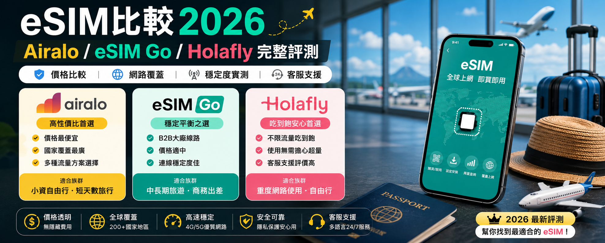

京都寺廟與楓紅散步地圖｜清水寺、金閣寺、伏見稻荷3大路線
千年古都的靜謐之美，清水寺的木造舞台、金閣寺的金色倒影、伏見稻荷的千本鳥居，3條散步路線帶你走進京都最動人的風景。
京都寺廟與賞楓散步地圖｜均在路上 Travel Lab用最少預算，走最多地方 — 日本・韓國・台灣・東南亞自由行攻略


千年古都的靜謐之美，清水寺的木造舞台、金閣寺的金色倒影、伏見稻荷的千本鳥居，3條散步路線帶你走進京都最動人的風景。
京都寺廟與賞楓散步地圖｜均在路上 Travel Lab
韓國最大島，開車繞一圈看火山地形、草原牧場、絕美海景，還有必吃的黑豬肉烤肉與海鮮鍋。
濟州島自駕環島攻略｜均在路上 Travel Lab
國境之南的陽光沙灘，南灣衝浪、龍磐公園看海、鵝鑾鼻燈塔打卡，晚上墾丁大街夜市一路吃到飽。
墾丁三天兩夜海景與夜市攻略｜均在路上 Travel Lab
帶著筆電去泰國工作！清邁是亞洲數位遊牧大本營，低物價、好咖啡、慢生活的遠端天堂。
清邁7天數位遊牧指南｜均在路上 Travel Lab
韓式烤肉、醬蟹、炸雞、部隊鍋、廣藏市場小吃，首爾5大必吃美食一次收錄，附換錢攻略和T-money教學。
首爾必吃美食攻略｜均在路上 Travel Lab
台灣最美的東海岸線，太魯閣峽谷的鬼斧神工、池上稻田的自行車漫遊、太平洋海景的第一排民宿。
花東三天兩夜看海放空之旅｜均在路上 Travel Lab
關西交通票券種類多到眼花？這篇幫你整理JR Pass、關西周遊卡、ICOCA的適用場景，附省錢決策樹。
關西交通票券完全指南｜均在路上 Travel Lab
機票、住宿、交通、美食全面解析，7天行程 NT$25,000-55,000 怎麼抓？各城市預算對照表讓你出發前做好功課。
日本機票怎麼買最便宜？2026廉航與傳統航空完整比較
首爾5天4夜 NT$18,000-35,000、釜山3天2夜 NT$12,000-22,000，3種行程預算試算，出發前必看。
韓國預算解析2026｜首爾5天4夜多少錢？機票、住宿、餐費完整拆解
道頓堀10選、心齋橋甜點地圖、梅花地下街美食， NT$2,000-3,500 吃遍大阪，大阪美食地圖與交通建議。
大阪2天1夜美食攻略｜道頓堀、心齋橋、黑門市場必吃小吃地圖
門票種類與價格2026、Express PASS怎麼選、必玩設施Top10路線規劃，從早排隊到晚的環球影城攻略。
大阪環球影城攻略2026｜快速通關、必玩設施、門票優惠完整教學
5大分類打包清單：證件金錢、電子設備、衣物穿搭、盥洗保養、常漏物品黑名單，出國前3分鐘快速檢查。
日本旅遊行李清單2026｜均在路上 Travel Lab
Day1巴拿山纜車賞金橋、Day2美溪海灘＋龍橋、Day3會安古鎮散步， NT$8,000-15,000 的越南之旅。
越南峴港3天2夜全攻略｜均在路上 Travel Lab
Health Land、Lets Relax、平價街邊攤到 Divana SPA，曼谷按摩類型解析與 NT$200-3,000 價格參考表。
曼谷按摩推薦2026｜平價泰式按摩、高端SPA、街邊店差異一次看懂
西門町必吃、信義區美食、寧夏夜市攻略、迪化街老街新味，12行政區美食地圖與交通方式完整收錄。
台北美食地圖2026｜12個行政區必吃清單，從米其林到夜市小吃
九份水霧奇景、阿妹茶樓、豎崎路散步，順遊金瓜石一日遊，含交通方式整理與住宿推薦。
九份老街攻略2026｜水霧氣氛、必吃美食、私房路線與交通指南
Airalo、eSIM Go、Holafly 三大品牌評測，各國推薦方案、購買與啟用教學，10個常見問題一次解答。
eSIM比較2026｜Airalo／Holafly／Saily 完整評測，哪家最適合你？
釜山超美海景咖啡廳清單，海雲台膠囊列車預約攻略，還有廣安里看海住宿高CP值推薦。
釜山海雲台膠囊列車預約教學｜均在路上 Travel Lab
在地人帶路！國華街必吃小吃地圖與充滿故事的老宅文青咖啡廳，台南美食一日遊這樣排。
台南美食牛肉湯與老屋咖啡地圖｜均在路上 Travel Lab
小樽運河、札幌雪祭、函館百萬夜景，冬天去北海道的禦寒穿搭與自駕心得，附5大溫泉推薦。
北海道冬季賞雪攻略｜均在路上 Travel Lab出國玩最怕的就是意外——班機延誤、行李遺失、突發疾病都可能在旅程中發生。我建議至少買個旅平險 + 醫療險，三天兩夜只要 NT，真的很划算。
我自己訂住宿的習慣是：Agoda 查評價 → 比價後在 Trip.com 或官網下訂。Agoda 的篩選功能最好用，Trip.com 有時會有獨家折扣碼。